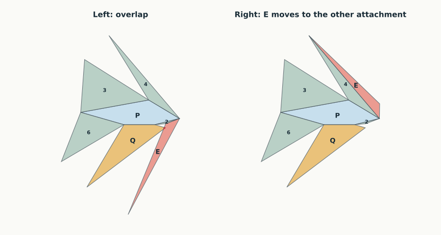
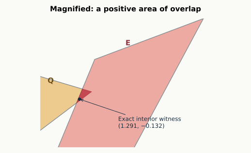

12 September 2026. The whole graph remains open. The original one-pair reduction is correct, but its proposed fixed cut tree really can overlap. The results below replace that false candidate with a sharper question: can one of two attachments of triangle 036 always be made safe?
Latest progress: one repair obligation in R0 is now proved: Right keeps E away from 135. The proof uses an auxiliary triangle and the equal lengths of two copies of edge 06. Five of the six conditional pair obligations remain open. Read the new proof, or see the current table.
Back to the graph map · General pair lemmas · Exact certificates
Think of this polyhedron as a pentagonal base with a roof. Five roof faces share an edge with the base. Only one triangle, 036, has no base edge. Call it E. Call the quadrilateral 0324 Q, and the base 15246 P.
Unfold P and its five edge neighbors first. That six-face arrangement is safe for every convex realization, by the established face-neighborhood theorem. We then have to place E. It can stay attached along 06 to triangle 046, along 36 to triangle 136, or along 03 to Q.
The first two options are especially attractive: changing between them moves only E. The rest of the page uses these names:
| Rule | Keep E attached along | Cut these six original edges | Pairs still needing a geometric argument |
|---|---|---|---|
| Left (original candidate) | 06, to triangle 046 | 03, 04, 13, 23, 35, 36 | E / Q |
| Right (new fallback) | 36, to triangle 136 | 03, 04, 06, 13, 23, 35 | E / Q; E / 135; E / 235 |
Both lists are spanning cut trees. Left has 20/21 pairs settled; Right has 18/21. These are universally justified pair counts for those particular trees. They do not mean that the graph proof is 95% or 86% complete.
Flatten triangle 046 together with E along their common edge 06. The pair forms one patch. Its shape tells us where a proof is still needed:
| Patch type | Proved for every realization meeting the condition | Remaining regime |
|---|---|---|
| Convex | Left works | None |
| Inward at 0 | Left works if | R0: a more severe inward angle, exceeding |
| Inward at 6 | Left works if or | R6: both conditions fail, forcing curvature at 4 above |
Here is Q’s face angle at 0, and is the curvature at a vertex: minus the sum of face angles there. Formulas use radians. The R0 regime forces curvature at 4 below ; R6 forces it above. At exactly , Left always works.
The proof encloses each end piece in a cone at 4. For an inward corner at 6, a triangle comparison bounds how far the patch can reach. For an inward corner at 0, the cut edge 03 supplies a separating line. This extends a useful idea from the six-vertex work, with the new inequalities proved separately.
Read the complete cone proof, including equality cases. The second regime really occurs: a new exact example has an inward corner at 6 and Left overlap; Right repairs that shape.
The repair proof has now advanced: E/135 is proved safe throughout R0. E/Q and E/235 are still open there, as are all three R6 pairs. The page below keeps the earlier exact failures and lists the remaining implications.
Drag to rotate the exact center shape. Red edges are cut. Amber: Q. Coral: E. Blue: pentagonal base P. Geometry is shown without stretching.


Here are exact coordinates for the displayed solid. Terminating decimals in this table denote rational numbers, not rounded measurements.
| Vertex | x | y | z |
|---|---|---|---|
| 0 | 1.34 | 0.085 | 0.055 |
| 1 | 0.8 | 0.8 | 0 |
| 2 | 0 | 0 | 0 |
| 3 | −1.2 | 1.7 | 1.1 |
| 4 | 1 | 0 | 0 |
| 5 | −1.4 | 0.4 | 0 |
| 6 | 1.8 | 0.2 | 0 |
The check establishes the seven stated facets, their strict convexity, and the two unfolded placements. It proves that the marked point lies strictly inside both Q and E in Left. For Right, the three remaining pairs have strict separating lines; the other 18 use the written general pair lemmas.
There is a stronger result than a single example: all these conclusions hold on an 11-parameter box of half-width 1/100000 around this shape, in the coordinates described below. Thus Left fails and Right works throughout a full-dimensional family of this graph. This box preserves the required planarity identities. It is not a box of 21 independently perturbed vertex coordinates, which would generally destroy the polygonal faces.
The arithmetic uses integer bounds rounded outward, including square roots. Every one of the seven inequalities putting the witness inside Q and E has lower bound greater than 0.0136 on this box. The three Right separators have projection gaps greater than 0.1999, 0.8246, and 4.4338. The directions are not normalized, so these gaps are not Euclidean distances. The complete rational bounds are in the certificate. These are checked finite certificates with stated geometric-lemma dependencies; they are not Lean formalizations or universal graph proofs.
| Proposed rule | Result | Evidence |
|---|---|---|
| Always use Left | False | Exact counterexample, and an 11-parameter failure box |
| Keep source 3 and merely switch Q between its two possible hinges | Insufficient | Both source-3 trees overlap on the same exact shape |
| Attach E along the longer of 06 and 36 | False | Exact rational shape with 36 strictly longer, but Right overlaps; Left works there |
| Try Left; if it overlaps, use Right | Open | No joint failure found in the recorded searches; the three implications below still need proof |
The two-source-3 certificate checks overlap in each tree and a successful tree from source 4 on that same shape. The longer-edge certificate checks the strict length ordering, the overlap, and the successful Left net. These failures disprove proposed rules, not edge unfoldability of the graph.
An initial survey tested 15 distinct cofacial cut trees on 1,200 valid samples, including five previously discovered Left failures. A source-4 candidate had no observed failures. Targeted optimization then found apparent failures for each of its four unresolved pairs. We therefore did not promote that candidate to a theorem.
A later sample of 1,800 valid shapes found no failure of the longer-edge choice. Targeted optimization found one; it was then converted to the exact certificate linked above. The two-attachment and three-attachment searches also approached nearly flat shapes where floating signs became tiny. These are inconclusive boundary cases, not certified failures or successes.
A new search deliberately sampled the sharp-4 regime missed by the first sampler. It extended 154 apparent Left failures to the full seven-vertex graph. One became the exact R6 certificate linked above. A second search froze each of 159 local obstructions and varied only vertices 1 and 5, as permitted by the localization lemma. It found no robust joint failure in 2,086 valid extensions. This strengthens the search strategy, not the universal claim; near-zero floating scores remain inconclusive.
All discovery logs and their scripts are retained separately. None is used as a premise of a positive proof.
Localization lemma. Whether Q overlaps E in Left depends only on vertices 0, 2, 3, 4, and 6. It is independent of where vertices 1 and 5 are placed, provided the full convex polyhedron still has the stated graph.
Proof. The unique hinge path from Q to E is
Q → P → triangle 046 → E, across hinges 24, 46, and 06.
Inside P retain just the triangle 246. It lies in P and keeps the two hinges 24 and 46 in exactly the same relative position. Replacing P by this triangle therefore leaves the relative placements of Q and E unchanged.
The convex hull of 0, 2, 3, 4, and 6 is a quadrilateral pyramid: its base is Q and its apex is 6. Its other faces are 036, 046, 246, and 236. Its cut tree 03, 04, 23, 36 develops the displayed Q–246–046–E path exactly as Left does. Thus the unresolved pair is already a particular unfolding obstruction in that five-vertex pyramid. Vertices 1 and 5 never enter the calculation. □
This reduces the first obstruction from 11 metric parameters to seven. It also explains why knowing that every quadrilateral pyramid unfolds does not finish our problem: the easy pyramid star at 6 cuts the auxiliary segment 26. Segment 26 is a diagonal inside the original pentagonal face, not an allowed edge cut of N7-A992.
The next target is a conditional repair statement, rather than another fixed tree or an unproved length heuristic:
Two-attachment conjecture. For every convex realization of N7-A992, if Left has interior overlap, then Right has no interior overlap.
By the universal pair reductions, its entire missing content is the following three implications. Here “Left fails” means its Q and E have intersecting interiors.
The cone theorem splits each implication into R0 and R6. Of these six conditional statements, one is now proved and five remain open. The proved entry has a geometric argument; numerical searches do not supply its proof.
| Under actual Left overlap | R0: severe inward corner at 0 | R6: inward at 6, sharp vertex 4 |
|---|---|---|
| Right keeps E disjoint from Q | Open | Open |
| Right keeps E disjoint from triangle 135 | Proved | Open |
| Right keeps E disjoint from triangle 235 | Open | Open |
Why the green entry holds. R0 makes E’s angle at 0 obtuse. Localize the E/135 pair to the convex hull of vertices 0, 1, 3, 5, and 6. Adding its auxiliary triangle 056 gives a second copy of vertex 0, joined to 6 by an edge of exactly the same length as E’s copy. A hypothetical overlap would trap that auxiliary triangle. The equal lengths force an angle inequality that contradicts the obtuse angle at 0. The full proof includes the easier cone cases, the containment argument, and the exact positive identity.
Why these three would suffice. All six faces other than E are edge neighbors of P, so their 15 pairs are safe. In Right, E, 136, P, and 046 form consecutive pieces around vertex 6 along their uncut paths, settling E against 136, P, and 046. Only the three pairs in the table remain. In Left, the cofacial-core theorem at source 3 additionally settles E against 135 and 235; only E/Q remains. Therefore the three conditional implications would prove an original-edge unfolding for every realization of this graph. □
For a specified shape, an exact separating-axis test decides the initial pair: Q and E are convex polygons, so it suffices to examine the normals to their seven edges, in either orientation. Boundary contact is allowed; positive interior intersection is failure. The interval checker conservatively returns “not certified” if bounds straddle zero, rather than deciding a near-zero case from floating arithmetic.
The recorded searches support investigating this conjecture but do not prove it. The fallback has a different purpose from switching Q’s hinge: it leaves Q in place and moves E. The exact failure of both source-3 trees therefore does not refute this conjecture.
After a rigid motion and uniform scaling, use
There are eleven parameters. The quadrilateral requires , , ; the base is strictly convex, , and all seven facets must support the other vertices strictly. These are tested directly, not assumed from approximate graph recognition. The displayed center parameters are
The first obstruction omits , leaving seven parameters.
For completeness, the checker develops each child face without trigonometry. Let a hinge have planar endpoints , vector , and squared length . For a new corner with squared spatial distances from the hinge endpoints, put . Its developed position is
Choose the sign opposite the parent face across the hinge. Strict convexity puts every nonhinge corner on that side. The formula is just the two squared-distance equations solved along and perpendicular to the hinge. Outward rational interval operations enclose the exact position. Supporting facet determinants, polygon corners, strict witness-point inequalities, and residual separating axes are then replayed from the input parameters.
Run python3 -B -m n7.a992_exact from the n7 worktree to replay the saved certificates. The checker uses rational integer arithmetic for geometric signs; the separate discovery code uses floating arithmetic to find examples and draw figures. The experiment recipes preserve the finite searches.
All edits and results are confined to n7/ in the separate worktree. The six-vertex proofs and their Lean formalization are unchanged by this work.